Who We Are
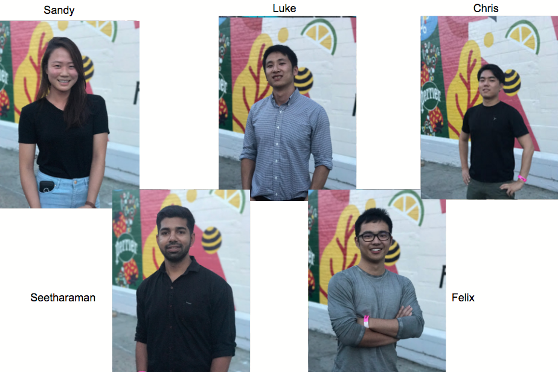
Team-Rookie-2017, as we pride ourselves with being the most awesome team ever, has spent the summer improving the browsing experience for Gilt users as well as to collect data for our personalization team. The end result of our project included the crafted front-end user experience and a back-end service for data processing.
Project Ideation
The final project idea rose to the top through countless meetings and discussions with various teams in the organization. With the initially decided problem-solution proven to be unexecutable, our team, along with all of our mentors, took efforts to come up with a new solution to solve the given problem with the limited resources we had. This immersive process, in the very beginning of the program, ensured the understanding of the engineering problem and established the success of our project.
To arrive at the best possible solution, we spent time learning the technology stack end-to-end. We went through many tutorials and labs with our mentors on the technologies we were going to eventually use, namely Scala, Android, and the Play framework. As we gained familiarities with these tools and technologies daily, we were quickly able to finalize on our ideas and the project has finally taken off.
Problem Space:
So let’s talk about the problem. With a growing user base, the Gilt platform needs to better understand what the users’ interests are in order to tailor unique shopping experiences to different user groups. Currently, users are able to “shop-the-look.” This feature allows a user to browse a completed set of apparels, such as the combination of a shirt, a pair of jeans, and shoes. It rids the hassle of a lot of users having to discover these items separately, they are able to find them all at once and make one single purchase. At the moment, these completed looks are selected by stylists who understand them. While stylists may provide the highest quality pairings, we are unable to scale human labor to the entire catalog. As fashion trends change, we need to update our pairings accordingly. Therefore, we aim to continuously collect user opinions on possible pairings. With these we can develop machine learning models to infer item compatibility. This is an ambitious goal, but not unachievable. We just need a steady supply of data.
Solution:
To tackle this problem, we proposed to create a fun and engaging experience for the users while they are shopping: completing their own outfits. One key requirement for this experience is that it can not interfere with the current purchase flow, meaning that if a user is closing in on a purchase, that process should not be interrupted. Therefore, rather than inserting the experience within the current workflow, we’ve decided to include the feature on the search page where users are able to favorite items they like. This is shown in the figure below.
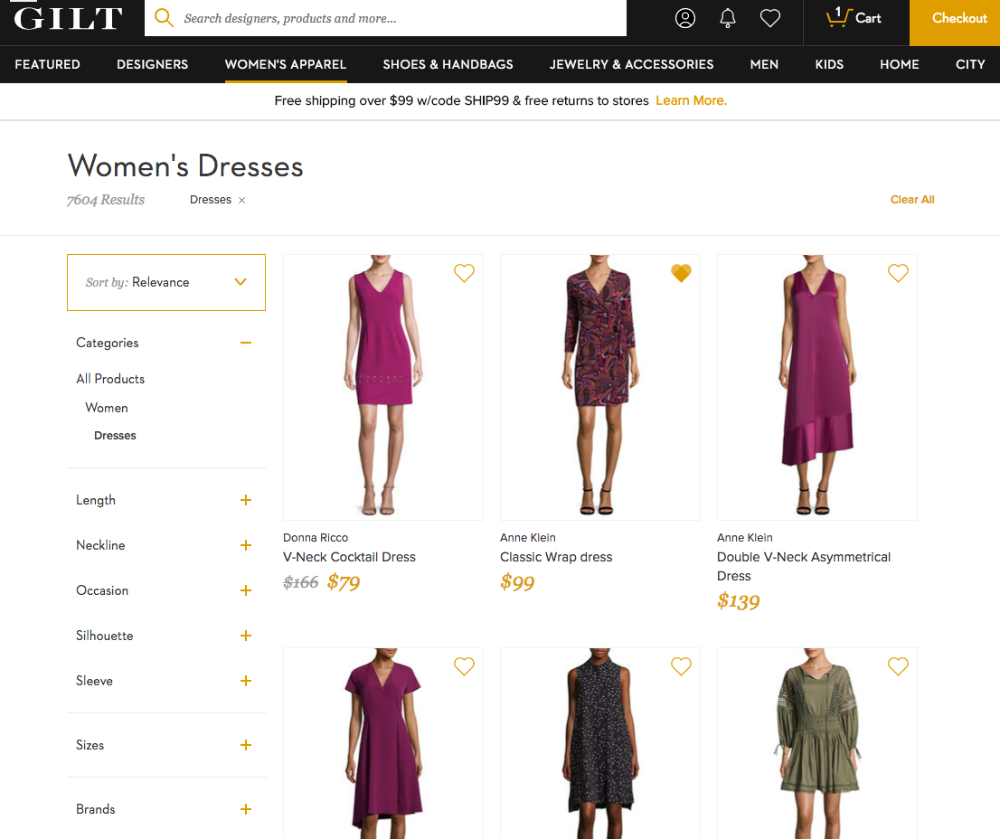
For our experience, to minimize disruption to the current workflow, we’ve added an additional hover link on the favorite button, and this will direct the users to our experience.
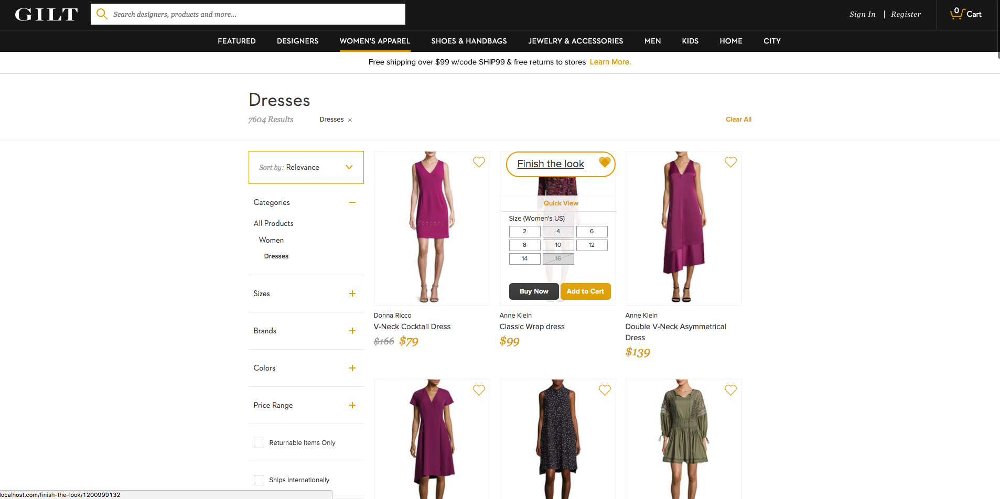
We provide the users with additional items that can potentially be paired with the initial favorited item to form completed looks. These products, limited by category and price based on the favorited items, will be presented to the users for individual selections. The users can let their imaginations go wild and pick what they think are the best combinations. During this process, we will collected this data and persist it through our back-end API to the database.
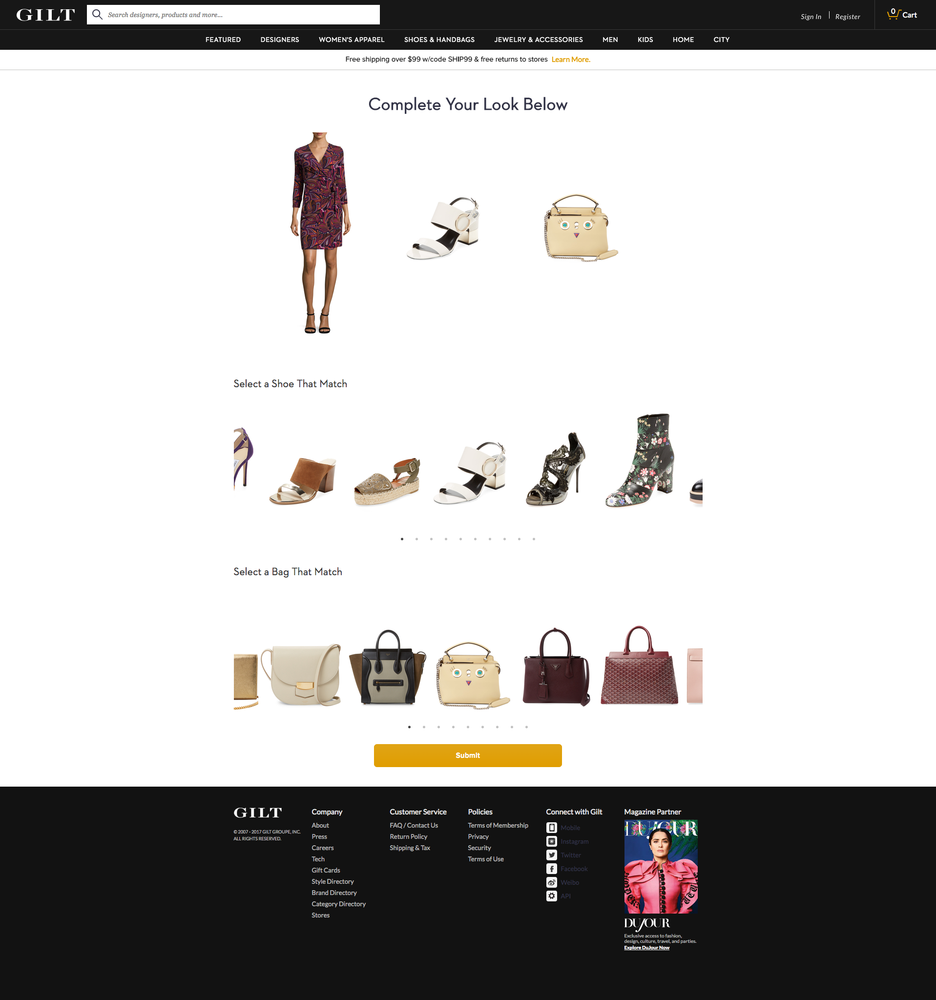
Finally, in order to complete the experience and make it as engaging as possible, we’ve decided to allow the users to immediately purchase the selected items if they wish. Since these items are what they specifically picked out from a pool of products, they will have a greater likelihood for conversion.
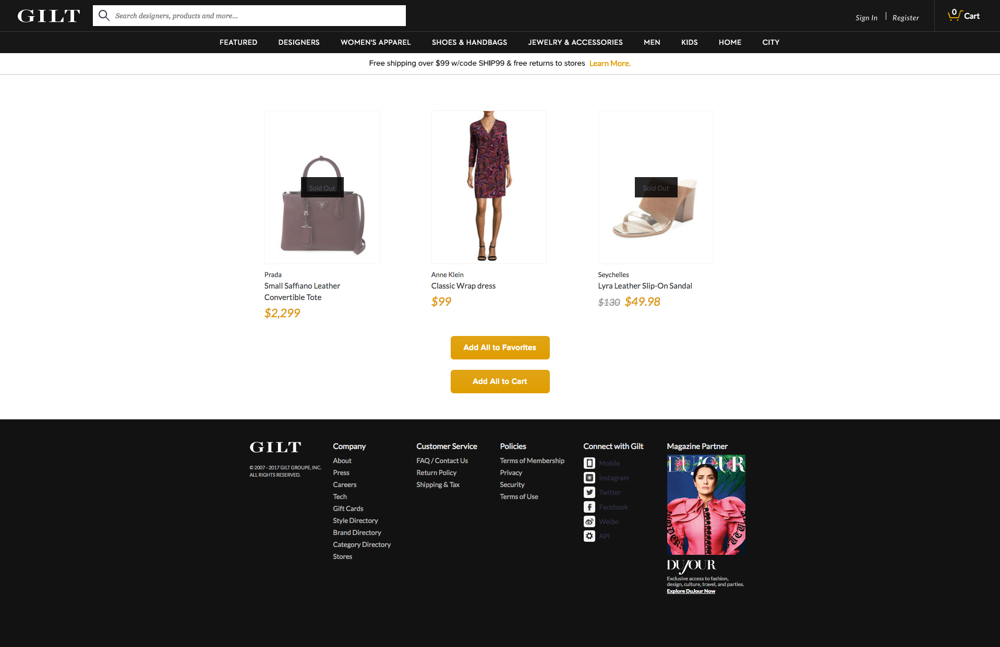
So in a nutshell, this is the completed project of the 10 week internship filled with hard work, grind, sweat (mostly from our daily trips to equinox right down stairs), and a whole lot of fun.
Intern Activities
While we were not busy being awesome engineers, team-rookie spent most of our leisure time exploring New York and staying cool. Here are some of the highlights.
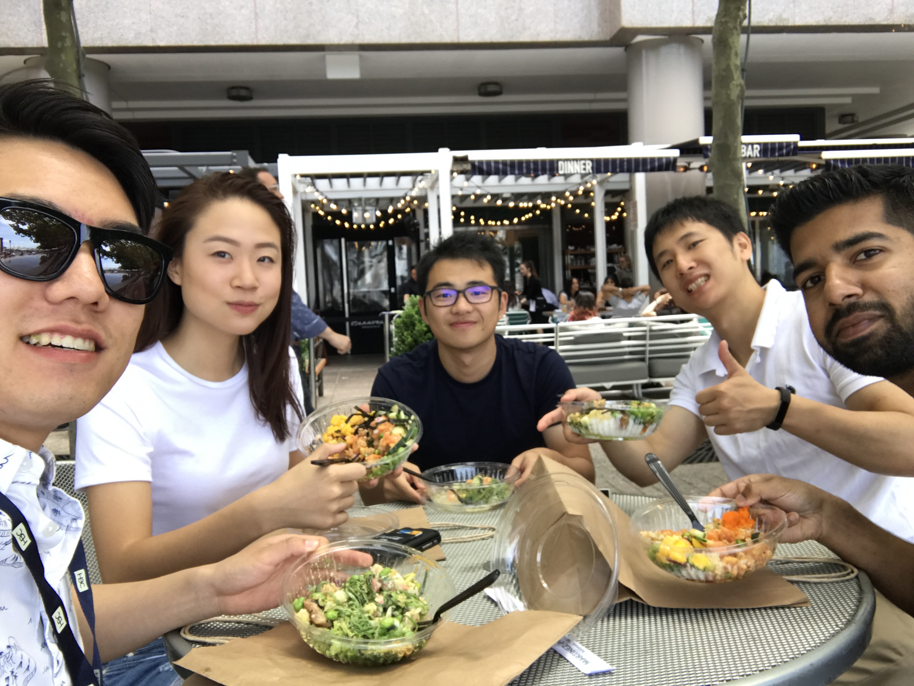
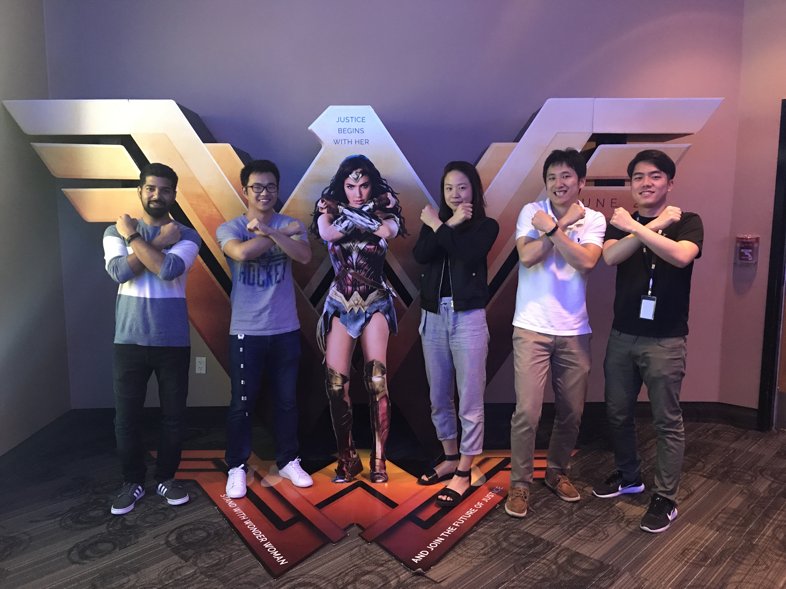
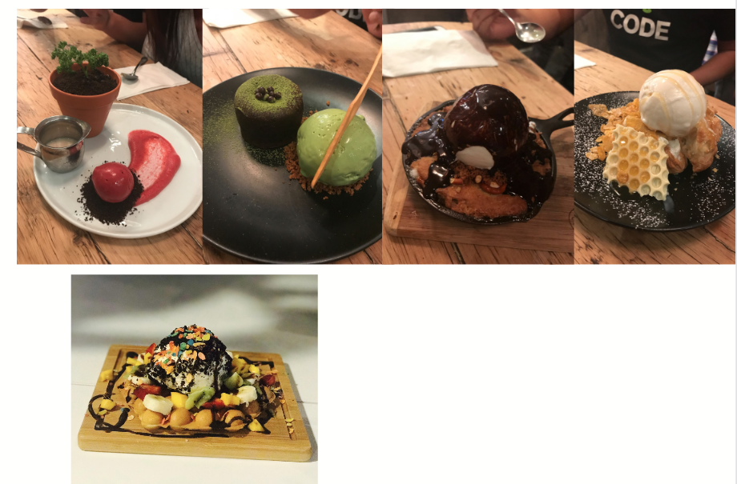
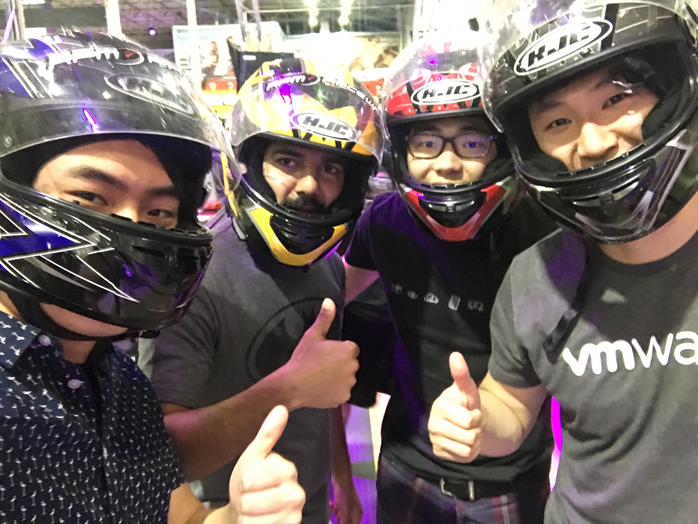
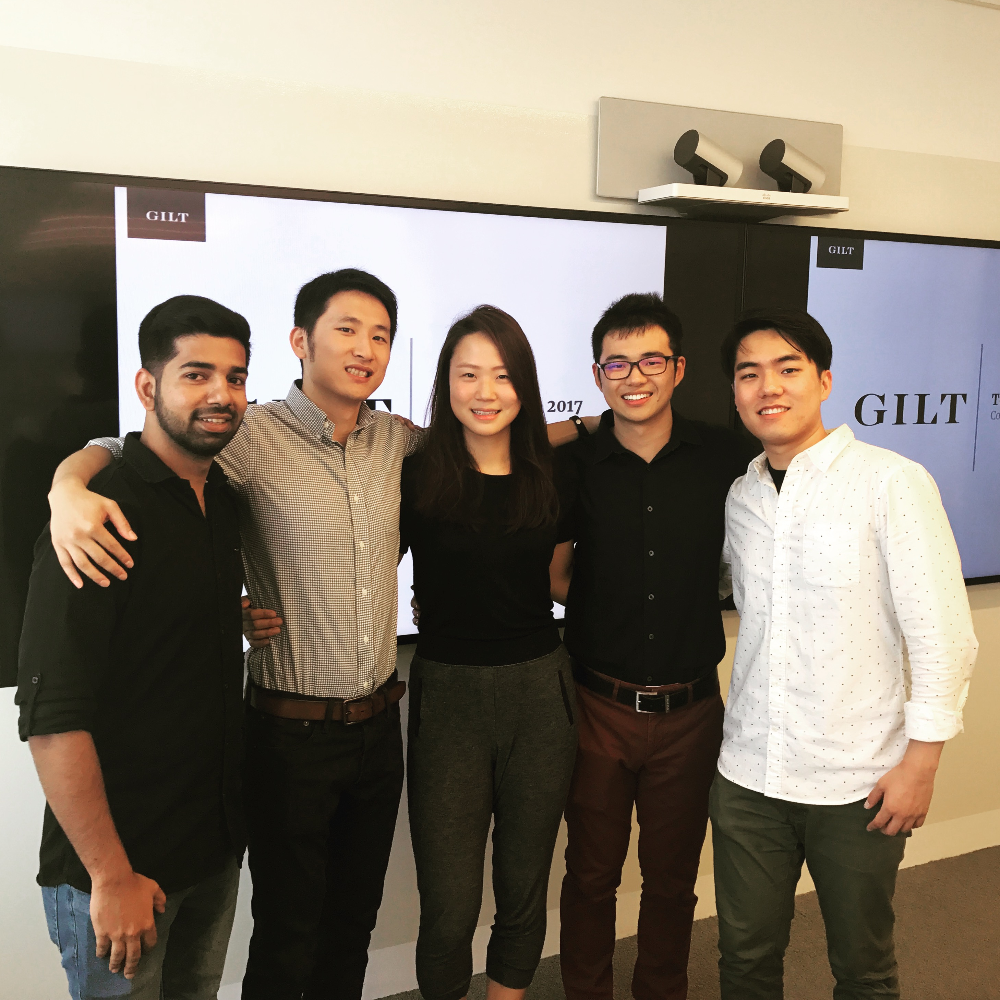
Mentorship
Team Rookie would like to give out a huge shout out to all of our mentors that helped us along they way and made this project possible (you know who you are)! With a special thanks to Doochan and Mike, who led the intern committee through all of our battles and came out on the other end with a solid victory. The complete-the-look experience would not have been possible without you guys.
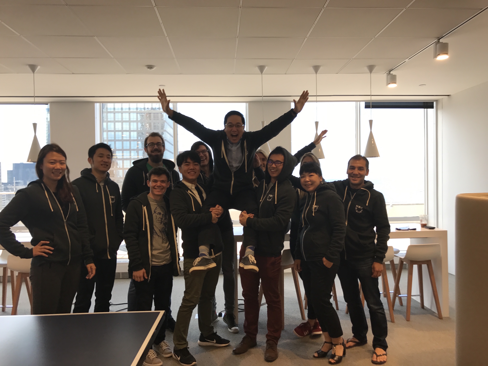
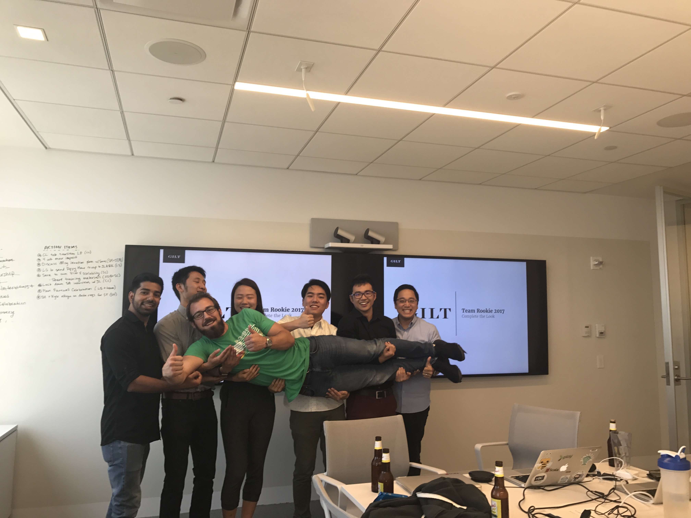